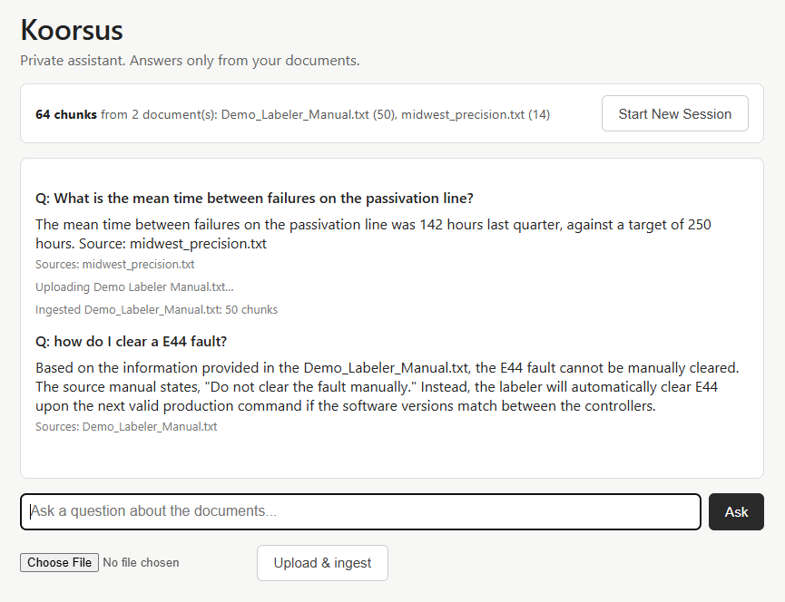
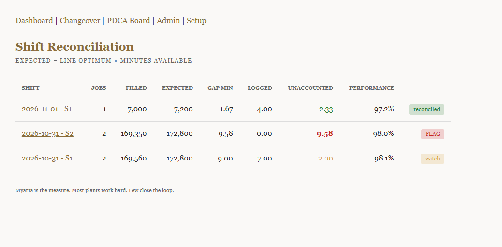
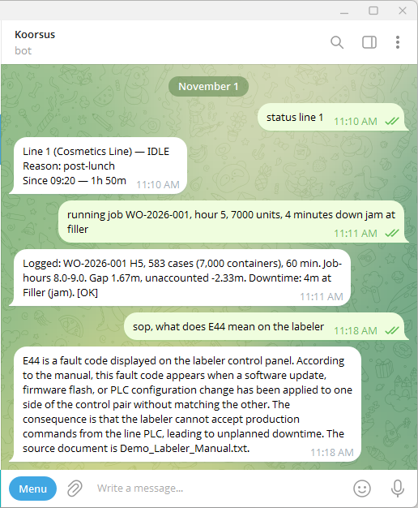
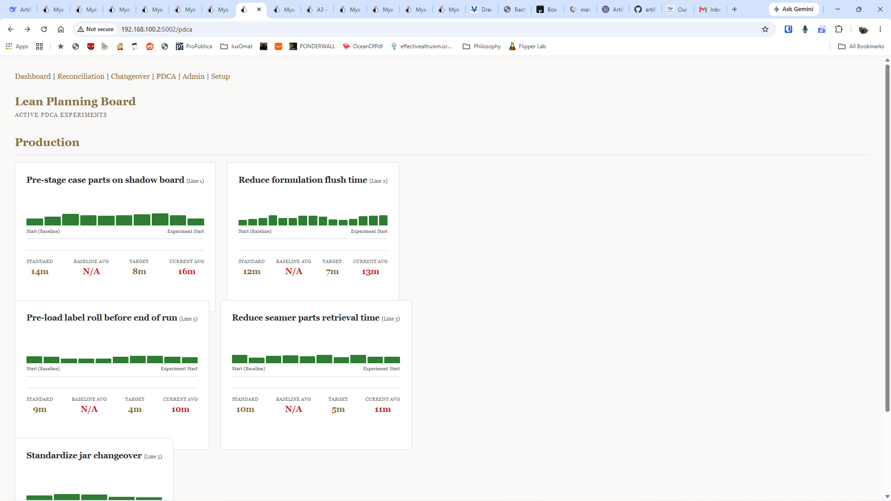

Artifexo Fabrika, Columbus, Ohio
Continuous improvement
stalls at Check.
Your people are not the problem. They come to work wanting to do a good job.
The problem is that getting the data costs a person, and that person stops improving and starts clerking.
Myarra fixes the capture, so the two measures compute themselves and PDCA closes weekly instead of annually. Koorsus answers from your documents. Both on hardware you own.
You own it. No monthly fees. No per-user fees. No upgrade fees.
Open source, or installed on your device from $1,500.
Request an assessment
See the full demo
The problem with AI in a plant.
A confident wrong answer about lockout/tagout is a liability, not a feature.
Every AI vendor will tell you their system is accurate. Most will confidently invent an answer when the document does not contain one. For a plant manager responsible for safety procedures, that is not an acceptable failure mode.
What we build.
Two systems on a single appliance. One answers questions from your documents. The other captures what happens on the floor, by voice, in the moment. Both run on hardware you own. Neither sends data anywhere.
📚
Koorsus. The course.
Latin cursus: the path from where your plant is to where it intends to be.
Your handbooks, SOPs, procedures, and maintenance logs, ingested and indexed on hardware you own. Ask a question in plain English. The answer comes back with the source cited. If the answer is not in your documents, Koorsus says so. It does not invent.
This is not a novelty. When a line is down and the answer is in a PDF nobody has opened since 2019, Koorsus finds it in four seconds and tells you which document and which section. When the answer is not in any document, it declines, and that refusal is what makes the answers it does give trustworthy.

📈
Myarra. The measure.
Polish miara: current state, future state, and the distance between them.
What is Line 2 doing right now? How many cases has WO-2026-001 produced against its target, and how many remain? Where did the last changeover lose minutes, and at which station? Myarra captures it as it happens, by voice from the line, and shows you the answer in cases, because cases are what you sell.
Myarra shows you the unaccounted minutes that your current OEE tool cannot see. It compares each changeover component against its standard, so you can see which station helped and which station hurt. It runs PDCA experiments that close the loop weekly instead of annually.
Read the full Soup-to-Nuts guide →

See the system.
A private appliance running entirely on your network. Here is what it looks like in practice.
The Floor View
What is happening right now? The live dashboard shows the state of every line, the active job, and the elapsed time.

The Floor Voice
Operators log production in seconds via Telegram. The bot validates the numbers and refuses implausible entries.
The Answer Engine
Koorsus indexes your SOPs and manuals. Ask a question, get an answer with the exact source cited. No hallucinations.

The Improvement Loop
Every experiment with its priority, condition, and target. The Check step measures the result against the floor, not a spreadsheet.
Pricing.
The software is open source. You can download it, flash it, and run it yourself for nothing. The prices below are for hardware, setup, and support. Start wherever fits.
📦
Free Self-Hosted
$0
The full Myarra and Koorsus source under GPL v3. Clone it, flash a Jetson, install it yourself. No cost, no obligation, no support. If you can run it, you owe us nothing.
See the source on GitHub →
The Appliance Ladder
$1,200. Hardware only. The Yahboom Jetson Orin Nano kit with SSD, Wi-Fi, and case. You flash it and build it yourself.
$1,500. Hardware and software. The same kit, flashed and installed with Myarra and Koorsus, demo data loaded. You enter your own master data.
$3,500. Turnkey on Orin Nano. We configure it remotely, ingest your master data, train your team, and support you for 90 days.
$5,500. Turnkey on Orin NX. The same turnkey service on the heavier module, for larger plants and future vision work.
Add-ons
$99. Odoo Connector. A read-only bridge between Odoo Manufacturing and an existing Myarra installation. Requires Myarra. Published on the Odoo Apps Store.
$100 per hour. Spot consulting. One hour minimum. Screen-share help with installation, configuration, or troubleshooting for anyone doing it themselves.
The floor voice.
A line lead types four words. The dashboard updates before the shift ends.
The tool that gets used is the one that fits in a pocket and takes ten seconds. Myarra is not a form. It is a Telegram message.
The lead sends: "running job WO-2026-001, hour 5, 7,000 units, 4 minutes down jam at the filler." The bot replies with a receipt. The dashboard updates. If the count is implausible, if voice-to-text has eaten a digit and 35,022 has become 3,022, the bot refuses and asks the lead to re-say. A lost digit in a transcript is not a data point, it is a data casualty, and Myarra does not log it.
When the lead is ready to end the job, the bot prompts the changeover. It walks each station, records the actual time against the standard, and if the changeover takes longer than the standard, that is what the record says. Nothing is entered twice. Nothing is entered a day late. Nothing is entered by someone who was not there.
How this works.
We do not sell software. We assess your operation, configure the appliance for your products and procedures, and install it on hardware you own. The code is open source. The data never leaves the building. The setup is one focused afternoon with your plant manager, and a line lead with a phone the next morning.
The appliance is an NVIDIA Jetson: small, silent, low-power, running entirely on your network. The document platform uses ChromaDB for retrieval, and the language model is Qwen 2.5, running locally on llama.cpp. The web interface is Flask. The database is SQLite. Every component is open source. Every byte stays in your building.
The source is on GitHub under GPL v3. You can fork it. Your own team can maintain it. You can hire someone else entirely. The business we are in is setting it up, integrating it with your ERP, and supporting it when you need us. Not holding the source hostage.
Beyond the floor.
Koorsus and Myarra are the two systems we install at every client. On the same appliance, we can deploy additional private agents. Each runs on your equipment, under your control, with no data leaving the building.
✉️
Email & Communications Agent
Screens, drafts, and replies to routine mail. Manages scheduling. Runs privately, on your hardware.
💬
Customer Support Agent
Handles routine inquiries across email and messaging. Trained on your business, on your hardware.
How we work.
1
Assessment
We walk your floor, review your documents, and identify where time and money are being lost.
2
Deployment
We install the hardware, ingest your documents, configure your products and procedures, and tune the system to your operation.
3
Stewardship
An optional monthly retainer keeps the system healthy and the numbers meaningful. Monitoring begins at $250 per month and covers uptime, log review, software updates, and a quarterly call. Advisory begins at $850 per month and adds weekly metric review, anomaly response, and monthly operational support. Spot work is quoted separately.
Advisory Engagements.
Beyond the appliance, these are the advisory engagements. Every operation is different. These are the starting points.
📊
Operational Diagnostic
$2,500
One day on-site. Current-state assessment, 60-day improvement plan, and a future-state roadmap. No obligation beyond the diagnostic.
See what's included →
🏫
On-Site Lean Training
$3,500
An eight-hour session on your floor for up to twenty people. We teach the tools your team will use: Plan-Do-Check-Act, the A3 problem-solving sheet, root-cause analysis with the fishbone diagram, the funnel diagram, and a hands-on lean simulation to make the theory land. Your team leaves with the methods, not a binder about them.
💼
Fractional Operations Leadership
Starting at $8,000/month
Ongoing oversight for companies that need senior leadership without the full-time cost. Two to three days per week on-site.
What the diagnostic includes.
One day on-site. A written report delivered within five business days. Everything below, in a single bound document.
1
Current-State Snapshot
A clear, written picture of how your operation runs today. Throughput at each constraint. Changeover times, by product family. Scrap and rework rates. Downtime, by cause. On-time delivery. You will know, for the first time, where you actually stand.
2
The Gap Analysis
We compare your current state to what is achievable. Not to an industry benchmark, but to your own operation's potential. The two or three constraints costing you the most. Where the losses are concentrated. Which improvements are within reach in the next thirty days.
3
Quick Wins: The First 30 Days
Three to five specific, low-cost actions you can take immediately. Not theory. Not best practices borrowed from a textbook. Things that fit your floor, your people, and your product.
4
The 60-Day Plan
A prioritized sequence of improvements for the following two months. Each item is scoped, assigned, and measurable. Written to be executed by your existing team, not to require an outside contractor.
5
Future-State Roadmap
Where this operation can be in six, twelve, and twenty-four months. A specific set of targets for throughput, changeover time, scrap rate, downtime, and OEE. These become the baseline for everything that follows.
6
What We Track From Here
The diagnostic establishes the metrics and the targets. If you choose to continue, those numbers are tracked daily by Koorsus, the course from where your plant is to where it intends to be, and read by Myarra, its measurement layer. Plan, Do, Check, Act. Not once a year in a binder, but every Monday morning, in plain English.
Koorsus is the course: the path from where your plant is to where it intends to be.
Myarra is the measure: current state, future state, and the distance between them, updated every shift.
Together they close the loop. Most plants work hard. Few close the loop.
What we ask of you: one day of access to your floor, your numbers, and the people who run the machines. That is all.
What is not included: travel expenses, billed separately at cost.
If we are not a fit: we will say so, and the diagnostic stands on its own. There is no obligation to continue.
Why it matters.
Your institutional memory is an asset. It should not live in a vendor's cloud.
We build systems that stay in your building and answer only to you. The knowledge your team has accumulated over thirty years belongs on your shelf, not on someone else's server.